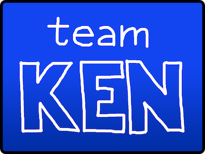

blogdown::shortcode(.name = "gallery",
folder = "gallery")First things first…

Buy a Team Ken shirt or other swag here to represent/embarrass Ken Jennings, the GOAT. All profits donated to the Pancreatic Cancer Action Network in honor of Alex Trebek.
When I was little, instead of doing normal kid things, I would read piles upon piles of nonfiction books about history and science. Somehow, a lot of this academic detritus has collected and stuck in my head over the years (hopefully useful for an academic?), and when combined with embarrassing volumes of angsty mid-2000s pop-punk lyrics, it turns out I know a lot of random stuff. Eventually I had the bright (and foolish) idea to try to make something of this. Here you can see what I’ve gotten away with so far…
(2012) Jeopardy! College Championship
In 2012, I was selected to represent the University of North Texas in the Jeopardy! College Championship. At the time, I was a senior at the Texas Academy of Math and Science, a program for high school juniors and seniors to enroll at UNT, live in a dedicated dorm, and take two years of college courses. I was a UNT sophomore by credits, so I was technically a college undergraduate. If it’s good enough for Jeopardy!, it’s good enough for me!
Thanks to some educated guessing and a robust knowledge of the day’s viral YouTube videos, I managed to win first place in the tournament, taking home $100,000 and an awkwardly top-heavy trophy. The money disappeared into college tuition as quickly as it came, but the trophy is still somewhere in my parents’ house.
(2013) Jeopardy! Tournament of Champions
After years of merely yelling answers at the TV from my couch, getting to play Jeopardy! on the real stage got me hooked. Luckily, in addition to the top winners from the current season of grown-up Jeopardy!, the winner of the College Championship gets an automatic spot in that year’s Tournament of Champions. I got to come back for one last chance to get schooled by actual trivia experts, where I lost in the first round, but I had so much fun in the process that it was easily worth it in the end.
(2016) 500 Questions, season 2
After finishing Jeopardy!, I accepted my fate as a forgotten has-been. Then, out of the blue, almost 3 years later, I got a Facebook message from a casting director recruiting contestants for a new prime-time trivia TV special. After an arcane months-long audition process (the details of which I must take to my grave, or the production lawyers will send me there ahead of schedule), I was miraculously selected to be the first “challenger” on Season 2 of 500 Questions, a show where you try to answer as many (up to 500!) questions as you can without missing three in a row. I clawed my way up to $28,000 of prize money, which has paid for a whole lot of snacks (but never enough!).
(2019) Jeopardy! All-Star Games
You can take the girl off the game show, but maybe you can’t take the game show out of the girl. Jeopardy! had long since been a joke item at the very end of my CV, when one day I got an email from the producers (who I hadn’t heard from in years) asking if I was interested in being a part of “something special…” Uh, YES. And look what happened!
For Jeopardy’s first team-based tournament, I rounded out Team Ken with Ken Jennings (we meet again, see above) & Matt Jackson. Ken, Matt, and I did a bit of evidence-based studying for our return to the show—if you’d like to hear a bit about the types of data science you can do to dig into Jeopardy strategy, you can listen to this NPR Planet Money episode, where Ken and I (among others) shared a bit of our experience. After two weeks of some of the most impeccably played Jeopardy I have ever witnessed (in the audience, and occasionally at the podium), we split a solid $300,000 second place prize.
(2023) Master Minds
In 2023, I was selected to join the team of sweet and smart trivia experts holding court on the Game Show Network show Master Minds. On the show, three contestants face off against three trivia experts, competing to be the last contestant and last expert to answer questions against each other for $10,000. Depending on the air schedule, if you’re lucky, you can catch me on weekdays at 6 pm answering questions, serving up fun facts, and very visibly reacting to questions I’m excited to answer.
(2024) Jeopardy! Invitational Tournament
Five years and one global pandemic after I was previously invited back to Jeopardy!, I was lucky enough to be one of the past champions selected to return for the first Invitational Tournament, where players from different generations of the show get to see if they can shake off the rust. I loved getting to see old friends from the All-Star Games, and meeting other players old and new! And while I lost my quarterfinal game on a tough Final Jeopardy wagering choice, I’m still proud of my performance.
Photos (poorly organized, sorry!)
This photo gallery is under construction.